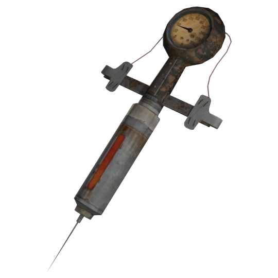
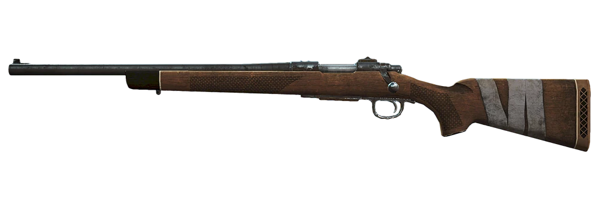
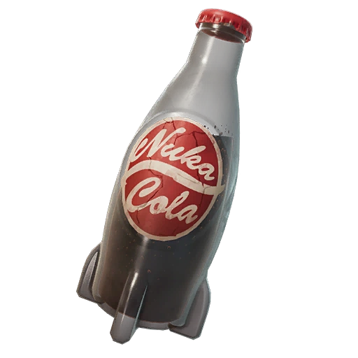
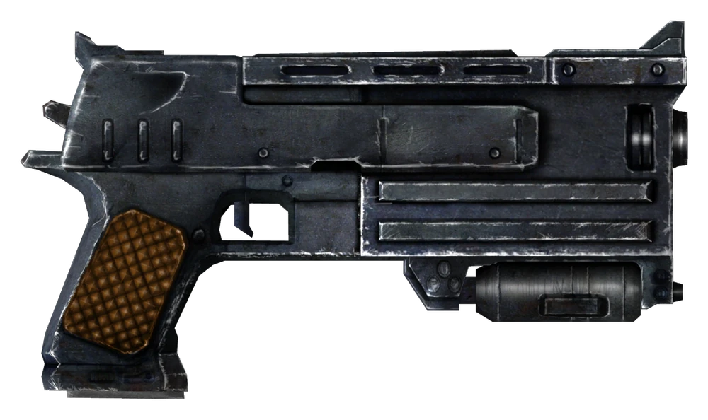

Inventory
Every Vault Dweller needs a well-stocked inventory to survive the Capital Wasteland. Below is the current loadout — weapons, aid items, and apparel ready for the dangers lurking beyond the Vault door. Manage your carry weight carefully; every pound counts when sprinting from a Deathclaw.

Stimpak ×12
A pre-packaged syringe containing a mixture of healing chems. Essential for field medicine — injects directly into the bloodstream to accelerate cellular regeneration and stop bleeding.
AID
Hunting Rifle
A reliable bolt-action .308 caliber rifle. Effective at long range against human enemies and moderate-threat creatures. Standard issue for wasteland scouts and Minutemen rangers.
WEAPON .308 CAL
Nuka-Cola ×4
The flavor you've been waiting for — since before the war. Restores a small amount of HP but adds minor radiation. A staple of pre-war American culture and still the most popular beverage in the wasteland.
AID +RADS
10mm Pistol (Winterized)
A military-grade 10mm semi-automatic sidearm with a winterized finish for cold-weather operations. Reliable close-quarters backup weapon with a 12-round magazine. Standard issue in many Vault security teams.
WEAPON 10MM